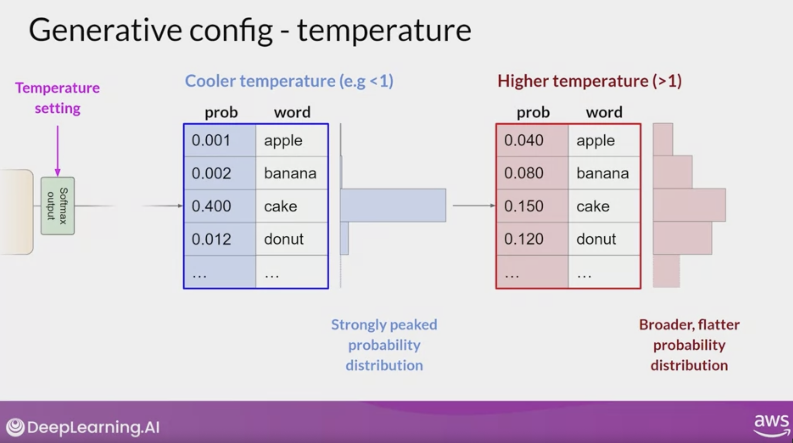
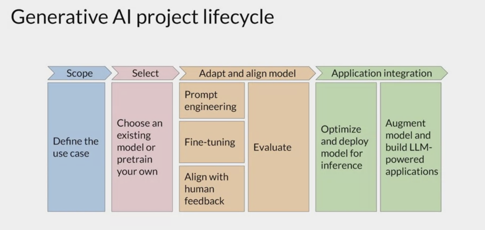

Chapter 1 Foundations of Generative AI and LLMs
1.1 Generative AI Overview
Generative models learn statistical structure from observed data and generate new samples under that learned distribution. Depending on the model and interface, outputs can include text, images, audio, video, structured data, or code. Common applications include:
Chatbots
Image generation from text
Code development plugins
1.1.1 What is Generative AI?
Statistical learning: Generative models learn patterns in training data and use them to produce new outputs. They do not retrieve a guaranteed fact simply because an answer sounds confident.
Training: Modern LLMs are commonly pre-trained on large token corpora using substantial compute, then adapted or aligned for intended interactions. Dataset size and training recipe vary by model.
Foundation models: Broadly trained models can be adapted to many downstream tasks. Capabilities and limitations must be measured; parameter count alone does not establish reasoning quality or task suitability.
Examples include BERT, GPT-family models, Llama, BLOOM, PaLM, and FLAN-T5.
1.1.2 Understanding Parameters
Learned values: Parameters are numerical values updated during training. They encode distributed statistical structure, but they are not a database of exact memories.
Scale is one factor: More parameters can increase representational capacity, but performance also depends on data, architecture, optimization, inference strategy, adaptation, and evaluation domain.
Model Representation: Throughout the course, LLMs will be represented by purple circles.
Example Model: In the labs, you will use an open-source model called flan-T5 for language tasks.
1.1.3 Model Adaptation and Use
Fine Tuning: You can either use these models as they are or apply fine-tuning techniques to adapt them to specific use cases without the need to train a new model from scratch.
Multimodal Generative AI: While generative AI models exist for images, video, audio, and speech, this course focuses on LLMs and natural language generation.
1.1.4 Interaction with LLMs
Natural Language Prompts: Unlike traditional machine learning and programming paradigms that use formalized syntax, LLMs take natural language instructions (prompts) and perform tasks.
Context window: The context window bounds the tokens available for instructions, conversation, supplied content, and tool results. Its size varies by model and product and should be checked in current documentation.
Prompt –> LLM –> Completion (generated text)
1.2 Use Cases of LLM
The broader applications of large language models (LLMs) and generative AI beyond chatbots. It highlights that while chatbots are prominent, LLMs can also perform diverse tasks, such as:
Text Generation: LLMs can generate essays based on prompts and summarize dialogues.
Translation: They can translate between different languages and convert natural language into machine code, such as generating Python code.
Information extraction: LLMs can extract or classify spans such as people, organizations, and places. Retrieval of external information is a separate system capability that requires a data source or retrieval tool.
Augmentation: There’s ongoing development in connecting LLMs to external data sources and APIs to enhance their capabilities and access real-time information.
Scale can improve some capabilities under suitable data and training regimes, while smaller or specialized models may be preferable for cost, latency, privacy, or task-specific performance. Model selection requires direct evaluation on the intended use case.
1.3 Text Generation before Transformers
Introduction to Generative Algorithms
Generative algorithms have been a part of natural language processing for a long time. Before the advent of transformer models, the primary architecture used for generative tasks was recurrent neural networks (RNNs).
1.3.1 Recurrent Neural Networks (RNNs)
Architecture: RNNs process sequences of data by maintaining a hidden state that captures information from previous time steps.
Limitations:
Computational and Memory Constraints: RNNs require significant computational resources and memory to process long sequences.
- Short-Term Memory: RNNs struggle with long-term dependencies due to vanishing gradients, leading to poor performance on tasks requiring an understanding of extended context.
1.3.2 Example of RNN in Action
Simple Next-Word Prediction Task:
With only one preceding word, the RNN’s prediction is not very accurate.
Scaling the RNN to consider more preceding words increases computational complexity and resource usage.
Despite scaling, the model often fails to capture enough context for accurate predictions.
1.3.3 Challenges in Language Understanding
Context Requirement: Successful next-word prediction requires understanding the entire sentence or document.
Complexity of Language:
Homonyms: Words with multiple meanings depending on context (e.g., “bank” as a financial institution or the side of a river).
Syntactic Ambiguity: Sentence structures can be ambiguous (e.g., “The teacher taught the students with the book” – did the teacher use the book or did the students have the book?).
1.4 Introduction of Transformer Architecture
In 2017, the transformer architecture revolutionized generative AI with the publication of the paper “Attention is All You Need” by researchers from Google and the University of Toronto.
1.4.1 Advantages of Transformers
Efficient Scaling: Can be efficiently scaled to use multi-core GPUs.
Parallel Processing: Processes input data in parallel, allowing for the use of larger training datasets.
Attention Mechanism:
Learns to pay attention to the meaning of words in context.
Addresses the limitations of RNNs by considering the relevance of each word in the input sequence to every other word.
The transformer architecture marked a significant breakthrough in natural language processing, enabling models to handle complex generative tasks more efficiently and accurately. The title of the influential paper, “Attention is All You Need,” underscores the importance of the attention mechanism in transforming the field of generative AI.
1.5 Transformers
1.5.1 Overview
The transformer architecture significantly improved natural language processing tasks compared to earlier RNNs, enabling superior generative capabilities. Its power lies in learning the relevance and context of words across a sentence using attention mechanisms.
1.5.2 Attention Mechanisms
Self-Attention: This mechanism learns the relationships between all words in a sentence, allowing the model to understand the context and relevance of each word in relation to others.
Attention Map: A visual representation of the attention weights, showing how words relate to each other. For example, the word “book” might strongly connect with “teacher” and “student”.
1.5.3 Transformer Architecture
The transformer model consists of two main components:
Encoder: Encodes input sequences into deep representations.
Decoder: Uses these representations to generate output sequences.
1.5.4 Tokenization
Segments text into tokens and maps each token to an identifier in the tokenizer vocabulary. Tokens may represent whole words, subwords, characters, bytes, or other learned units.
Tokenization methods can vary, representing whole words or parts of words.
Consistent tokenization is essential for both training and generating text.
1.5.5 Embedding Layer
Transforms token IDs into high-dimensional vectors.
Encodes the meaning and context of tokens in a vector space.
1.5.6 Positional Encoding
- Adds information about the position of words in a sentence, preserving word order relevance.
1.5.7 Self-Attention Layer
Analyzes relationships between tokens in the input sequence.
Multi-headed self-attention means multiple sets of self-attention weights are learned in parallel.
Each attention head learns different aspects of language, enhancing contextual understanding.
1.5.8 Feed-Forward Network
Processes outputs from the self-attention layer.
Applies position-wise nonlinear transformations within each transformer block. A later output projection maps final hidden states to vocabulary logits.
1.5.9 Softmax Layer
Normalizes logits into probability scores for each token.
Converts vocabulary logits into probabilities. The decoder may select the highest-probability token under greedy decoding or sample according to a configured decoding strategy.
1.5.10 Prediction Process
Let’s walk through a sequence-to-sequence task, such as translating a French phrase into English:
Tokenize Input: The French phrase is tokenized using the same tokenizer that trained the network.
Encoder: Tokenized input is passed through the embedding layer and multi-headed attention layers, producing a deep representation of the input sequence.
Decoder:
A start-of-sequence token triggers the decoder to predict the next token.
The decoder uses the encoder’s contextual understanding to generate the output token.
Loop: The output token is fed back into the decoder to predict the next token until an end-of-sequence token is predicted.
Detokenization: The sequence of tokens is converted back into words to form the final output.
1.6 Transformer Architecture
1.6.1 Overview
The transformer architecture consists of encoder and decoder components, essential for various natural language processing tasks.
1.6.2 Encoder
Function: Encodes input sequences into a deep representation of their structure and meaning.
Usage:
You can train encoder-only models to perform classification tasks such as sentiment analysis
Encoder-only models such as BERT produce contextual representations for input tokens. A task head can produce sequence-level outputs (for example, classification) or token-level outputs (for example, named-entity labels).
With additional layers, you can train encoder-only models to perform classification tasks like sentiment analysis.
1.6.3 Decoder
Function: In an encoder-decoder model, the decoder conditions on encoder representations and previously generated tokens. In a decoder-only model, generation conditions on the preceding token sequence without a separate encoder.
Usage:
- Decoder-only models, such as GPT-family, BLOOM, and Llama models, are widely used for generative tasks. Their performance varies by model, prompting or adaptation method, and evaluation domain.
1.6.4 Encoder-Decoder Models
Function: Handle sequence-to-sequence tasks where input and output sequences can differ in length.
Examples: BART, T5.
Usage: Suitable for tasks like translation and general text generation.
1.6.5 Practical Application
Main Goal: Understand the differences between various models to read model documentation effectively.
Prompt Engineering: Interact with transformer models through natural language prompts, focusing on written words rather than code.
Transformers: Attention is all you need
“Attention is All You Need” is a research paper published in 2017 by Google researchers, which introduced the Transformer model, a novel architecture that revolutionized the field of natural language processing (NLP) and became the basis for the LLMs we now know - such as GPT, PaLM and others. The paper proposes a neural network architecture that replaces traditional recurrent neural networks (RNNs) and convolutional neural networks (CNNs) with an entirely attention-based mechanism.
The Transformer model uses self-attention to compute representations of input sequences, which allows it to capture long-term dependencies and parallelize computation effectively. The authors demonstrate that their model achieves state-of-the-art performance on several machine translation tasks and outperforms previous models that rely on RNNs or CNNs.
The Transformer architecture consists of an encoder and a decoder, each of which is composed of several layers. Each layer consists of two sub-layers: a multi-head self-attention mechanism and a feed-forward neural network. The multi-head self-attention mechanism allows the model to attend to different parts of the input sequence, while the feed-forward network applies a point-wise fully connected layer to each position separately and identically.
The Transformer model also uses residual connections and layer normalization to facilitate training and prevent overfitting. In addition, the authors introduce a positional encoding scheme that encodes the position of each token in the input sequence, enabling the model to capture the order of the sequence without the need for recurrent or convolutional operations.
1.7 Some well-known models
1.7.1 BERT
BERT (Bidirectional Encoder Representations from Transformers) is a transformer-based language model developed by Google in 2018, designed specifically for natural language understanding (NLU) tasks. BERT differs from earlier models because of its bidirectional training approach, which allows it to understand context in a nuanced way by considering both the left and right context in a sentence.
1.7.1.1 Key Details About BERT:
Parameter Sizes:
BERT Base: 110 million parameters (12 layers, 768 hidden units, 12 attention heads)
BERT Large: 340 million parameters (24 layers, 1024 hidden units, 16 attention heads)
Bidirectional Training: BERT’s bidirectional approach uses masked language modeling (MLM) during training. This means it randomly masks words in a sentence and trains the model to predict them based on the surrounding context, giving it a deeper understanding of word relationships.
Pretraining Tasks:
Masked Language Modeling (MLM): BERT masks a portion of the words in a sentence and tries to predict the missing words.
Next Sentence Prediction (NSP): BERT also learns to predict if one sentence logically follows another, which helps with tasks like question answering and sentence-pair classification.
Fine-Tuning for Specific Tasks: BERT’s architecture is flexible, allowing it to be fine-tuned for a range of NLP tasks with minimal additional training. Common tasks include:
Sentiment Analysis
Named Entity Recognition (NER)
Question Answering (e.g., SQuAD benchmark)
Text Classification and Similarity Tasks
Impact and Variants: BERT set a new benchmark in NLP, and its architecture has inspired many derivatives and improvements, including RoBERTa (by Facebook AI), DistilBERT (a smaller, faster BERT), and ALBERT (a more efficient BERT variant).
BERT transformed NLP by demonstrating how powerful bidirectional transformers can be for understanding language context, which has since influenced other models like GPT, T5, and BLOOM.
1.7.2 BLOOM
BLOOM (BigScience Large Open-science Open-access Multilingual Language Model) is a large language model created by the BigScience project, an open scientific collaboration led by Hugging Face with researchers worldwide. BLOOM is designed to handle multiple languages and tasks, such as text generation, summarization, and translation, in a way similar to models like GPT-3.
1.7.2.1 Key Details About BLOOM:
Parameter Size: BLOOM has 176 billion parameters in its largest version, making it one of the largest open-access language models available. There are smaller versions with fewer parameters, which are used for different applications requiring less computational power.
Multilingual Capacity: BLOOM was trained on 46 languages and 13 programming languages, including English, French, Arabic, Spanish, Chinese, and more, making it versatile in multilingual NLP tasks.
Training Data: The model was trained on a vast, diverse dataset of over 1.5 terabytes of text data, which includes a variety of domains to help BLOOM perform across multiple contexts and languages.
Open Access: One of the primary goals of the BLOOM model is transparency and open accessibility for the AI research community, unlike other large models that are proprietary.
If you’re working in NLP or language modeling, BLOOM is an excellent model to explore due to its openness, multilingual capabilities, and state-of-the-art performance across various tasks.
1.8 Prompt Engineering
Introduction
Prompt engineering involves crafting and refining the input text (prompt) fed to a model to influence its behavior during inference, resulting in desired output (completion). The total text available for the prompt is called the context window.
1.8.1 Key Concepts
Prompt Engineering
Definition: The process of developing and improving the prompt to achieve desired model behavior.
Strategy: Including examples of the task within the prompt, known as in-context learning.
In-Context Learning
Definition: Helping models learn the task by including examples in the prompt.
Example: For sentiment analysis, the prompt can include the instruction, review text, and an expected sentiment output.
Zero-Shot Inference
Definition: Providing only the input data in the prompt without examples.
Effectiveness: Large models perform well; smaller models may struggle.
One-Shot Inference
Definition: Including a single example in the prompt to guide the model.
Example: A sample review and sentiment analysis followed by the actual input review.
Few-Shot Inference
Definition: Including multiple examples in the prompt to improve model understanding.
Example: A mix of positive and negative reviews to guide sentiment analysis.
Practical Considerations
Context Window
- Limitation: There’s a limit on the amount of in-context learning that can be included.
- Recommendation: If performance doesn’t improve with multiple examples, consider fine-tuning the model.
Fine-Tuning
- Definition: Additional training on the model with new data to improve task-specific performance.
- Upcoming: Detailed exploration of fine-tuning will be covered in week 2 of the course.
Model Performance and Scale
Observation: Model performance on various tasks depends on the scale (number of parameters).
Large Models: Good at zero-shot inference for multiple tasks.
Smaller Models: Generally limited to tasks similar to their training data.
Experimentation
Recommendation: Experiment with different models and settings to find the best fit for your use case.
Next Steps: Explore configuration settings to influence the structure and style of model completions.
1.9 Configuring Generative AI Models
Overview
This lecture examines methods and configuration parameters used to influence a model’s next-word generation during inference. Unlike training parameters, these settings are adjusted at inference time to control aspects like the maximum number of tokens generated and the creativity of the output.
Key Configuration Parameters
1. Max New Tokens
Definition: Limits the number of tokens the model generates.
Usage: Set to values like 100, 150, or 200 to cap the generation process.
Example: If set to 200, the generation might end sooner if an end-of-sequence token is predicted.
2. Greedy Decoding
Definition: The model always selects the word with the highest probability.
Characteristics: Works well for short texts but can lead to repetitive outputs.
3. Random Sampling
Definition: Selects the next word based on the probability distribution.
Advantages: Introduces variability to avoid repetitive text.
Disadvantages: Can produce outputs that are too creative or nonsensical.
Implementation: In Hugging Face, set
do_sample=True.
4. Top-k Sampling
Definition: Limits choices to the top k highest probability tokens.
Example: If k=3, the model selects from the top 3 probable words.
Benefit: Balances randomness and coherence in the output.
5. Top-p (Nucleus) Sampling
Definition: Chooses from tokens whose cumulative probability meets a threshold p.
Example: If p=0.3, selects from tokens that together have a probability of 0.3.
Benefit: Ensures sensible and coherent generation by limiting low-probability words.
6. Temperature
Definition: Controls the randomness by scaling the probability distribution.
Effect:
Low temperature (<1): Concentrates probability on fewer words, producing less random and more predictable text.
High temperature (>1): Spreads probability more evenly, increasing randomness and creativity.
Temperature=1: Uses the default probability distribution.

1.10 Generative AI project lifecycle
Introduction
Throughout this course, you’ll learn the techniques required to develop and deploy an LLM-powered application. This video introduces the generative AI project life cycle, guiding you from conception to launch.
1.10.1 Project Life Cycle Stages

1.10.1.1 Define the Scope
Importance: Accurately and narrowly define the project’s scope.
Considerations:
What specific function will the LLM serve in your application?
Does the model need to perform various tasks or focus on one specific task (e.g., named entity recognition)?
Outcome: Save time and compute costs by clearly defining requirements.
1.10.1.2 Choose a Model
Decision: Train your own model from scratch or use an existing base model.
Common Approach: Start with an existing model.
Considerations: Later in the course, you’ll learn rules of thumb to help estimate the feasibility of training your own model.
1.10.1.3 Assess and Train the Model
Initial Steps: Use prompt engineering and in-context learning to improve model performance.
Fine-Tuning:
Necessary if prompt engineering is insufficient.
Supervised learning process covered in Week 2.
Reinforcement Learning with Human Feedback (RLHF):
Ensures the model behaves well and aligns with human preferences. - Covered in Week 3.
1.10.1.4 Evaluate the Model
- Metrics and Benchmarks: Explore next week.
- Iterative Process:
- Start with prompt engineering.
- Evaluate outputs and fine-tune if necessary.
- Revisit and refine prompt engineering.
1.10.1.5 Deployment
- Final Steps:
- Optimize the model for deployment.
- Integrate the model with your application.
- Ensure efficient use of compute resources for a better user experience.